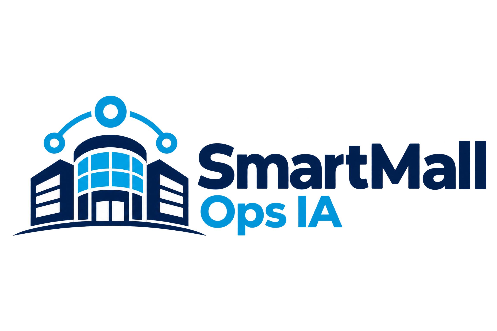

Ocorrências abertas
83 com prioridade alta
SmartMallOps IAOPERAÇÃO CONECTADA
Decisões operacionais mais claras, em tempo real.
Centralize ocorrências, equipes, ativos e alertas em uma única visão operacional.
Ambiente local de demonstração · Dados sintéticos
ACESSO RESTRITO
Entrar no sistema
Use um perfil de demonstração para visualizar as permissões de cada papel.
Perfis de demonstração
Senha para todos: demo123Esta autenticação é uma simulação local. Em produção, use servidor, senhas protegidas e controle de sessão seguro.